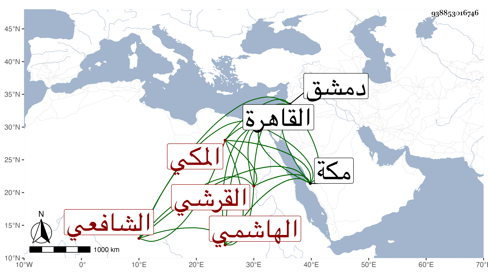

0902Sakhawi.DawLamic.ITO20230111-ara1.EIS1600.938853016746
Biography ID: 938853016746
181
أحمد بن عيسى بن موسى بن قريش الشهاب القرشي الهاشمي المكي الشافعي والد الزين عبد الواحد الآتي . نشأ بمكة وبها ولد فحفظ القرآن وقرأ في التنبيه وتلا بالقرآن على ابن عياش والكيلاني وسمع على الزين المراغي في سنة ثلاث عشرة وبعدها الحديث ، وقدم القاهرة غير مرة وكذا دمشق وسمع على شيخنا وغيره ، وكان لين الجانب فقيرا . مات بمكة في ليلة الجمعة سابع عشر شعبان سنة سبع وستين . أرخه ابن فهد ، وبلغني أنه تسلق في ثوب الكعبة حتى صعد إلى أثنائها مبالغة في التوسل بذلك لبعض مقاصد .
